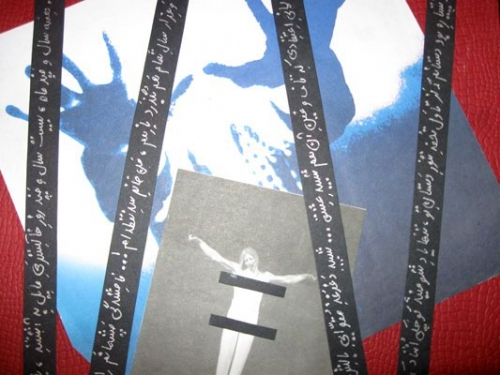

پذيرش > مقالات > علیه سکوت > تکه های اعتراض
 گزارشی از تهیه چهلتکه در اعتراض به خشونت های ناموسی علیه زنان در کردستان گزارشی از تهیه چهلتکه در اعتراض به خشونت های ناموسی علیه زنان در کردستان

 تکه های اعتراض تکه های اعتراض
29 اسفند 1387 - نینا وباب - نسخه قابل چاپ
پدری شکاک دختر ۱۴ سالهاش را خفه کرد، پدر سنگدل دخترش را سنگسار کرد، زنی جوان قربانی سوء ظن شوهر، قتل به بهانهی آبروی خانوادگی… نمیشود روزنامهای را ورق نزد، سایتی را باز نکرد، خبرها را مرور نکرد و نوشتههایی با چنین تیترهایی ندید. بهانهی قتل زنان، آزار آنان، کتک و تهدید و تحقیرشان در همه جای جهان یکسان است. تفاوتی ندارد در آفریقا، آسیا یا حتا دنیای مدرن اروپا یا آمریکا باشی، هستند این بهانهها و هستند زنانی که قربانی این بهانهها شوند، تنها تفاوت در آمار است، جایی کمتر و جای دیگری بیشتر. طبق آمار رسمی، در ایران ظرف هفت ماه از سال ۸۷، ۵۰ قتل ناموسی رخ داده که نه تنها مربوط به مناطق دور از مرکز و بومینشین که در شهرهای بزرگ هم اتفاق افتاده است.
در روزهای پایانی تابستان، چند قتل ناموسی در مریوان اتفاق میافتد، ذهن فعالان مدنی و حتا مردم مریوان درگیر این قتلها میشود. اما با قتل فرشته نجاتی، دختر ۱۸ سالهای که به دست پدرش کشته شد، نگاهها تیزتر و حساسیتها بیشتر میشود، آنقدر که تظاهراتی با تحویل گرفتن جسد فرشته از پزشکی قانونی با حضور نزدیک به ۲۰۰۰ نفر از مردم مریوان شکل میگیرد. بیانیه خوانده میشود، به خلأ حمایتی قانون از زنان و حتا پشتوانه قانونی و سیستماتیک از قتلهای ناموسی اعتراض میشود. فعالیت «کمیتهی علیه خشونتهای ناموسی» بیشتر میشود. کارگاههایی گذاشته میشود، صدای اعتراض بلندتر میشود اما قتل زنان به بهانههای ناموسی متوقف نمیشود. قانونگذاران چارهای نمیاندیشند و مسئولان از کنارش میگذرند.
>قتلها، خبرها و سکوت قانون، بهانهای میشود تا ایدهی درست کردن چهلتکهای در اعتراض به قتلهای ناموسی به ذهن سارا، دانشجوی ۲۴ ساله برسد. سارا میگوید: «موضوع کنفرانسم برای جلسات هفتگی، هنر فمینیستی بود، دنبال مطالب برای کنفراسم میگشتم که کارهای جمعی که زنان برای هنر فمینیستی میکردند، نظرم را جلب کرد و یکی از آنها چهلتکه بود. و خب فکر کردم که از طریق کار هنری میشود به واکنشهای خیلی جالبی به خیلی چیزها نشان داد. بعد از خواندن خبر تشکیل کمیته برای قتلهای ناموسی در کردستان، تقریباً اولین چیزی بود که احساس کردم از طریق چهلتکه میشود واکنش نشان داد.»
وقتی که سارا ایدهاش را با بچهها در میان میگذاشت تصور روشنی نداشت. ساعتها حرف زدند و طرح دادند. یکی میگفت هم زن و هم مرد توی این کار مشارکت کنند، اما منطق یکی دیگر میگفت که خشونت علیه زنان را تنها زن میتواند با تمام وجود لمس کند و فقط از زنان، طرح بگیرم. بعضیها حرف از کولاژ و کار گرافیکی و اثر هنری و بچههای هنر میزدند اما دیگری در جواب استدلال میکرد که بیان خشونت مهمتر از اثر هنری است، میگفت گلدوزی و نقاشیهای ساده و همین چیزها باشد. ساعتها حرف و رفت و آمد به گالریها و تماس با آدمهای مختلف، شباهت چندانی به پیشبینیهای ما نداشت. سحر میگوید: «با چند نفر که با بچههای گرافیک ارتباط داشتند، حرف زدیم تا از آن طریق کار را به آنها معرفی کنیم. برعکس تصور خودم کسانی که از قبل خیلی رویشان حساب کرده بودیم که حتماً کمک میکنند یا طرحی میدهند، بهانه میآوردند که اوضاع امنیتی خیلی خراب است و از همین حرفها و کار را انجام ندادند. در حالی که چنین کاری اصلاً خطری نداشت و حتا اسم کسانی که طرحی میآوردند، مطرح نمیشد. ولی بچههای دیگری که خیلی انتظار نداشتیم با صمیمیت کار کردند و بعضیها ده، یازده نمونه دادند که از بین آنها یکی را انتخاب کردیم.»
صحبت با آدمهای مختلف، گالریدارها، نقاشان و زنان خانهدار دست به دست بچهها میچرخید هر بار یکی مسئولیتش را قبول میکرد. از سعیده، مرضیه، فاطمه و سحر بگیر تا بقیه که وقت میگذاشتند و حرف میزدند. سعیده میگوید: «با چند تا از هنرمندان صحبت کردم و عکسالعملها متفاوت بود. بعضی شاگردانشان را معرفی کردند اما بعضی میگفتند که زمان میبرد و باید روی این موضوع کار کرد تا اثری خوب دربیاید. اما کلاً گالریدارها و هنرمندان کمک چندانی نکردند. هرچند به نظر من نیازی نبود که کار چندانی صورت بگیرد چون هدف ما این بود که تصویری که از ناخودآگاه و برخورد اولیه با مسأله خشونت به ذهن آدم میآید، به شکلی روی کاغذ یا پارچه پیاده شود.» و سحر اضافه میکند که «البته من فکر میکنم که این چهلتکه یک اثر هنری است. به یکی از نقاشان که مراجعه کرده بودیم، گفته بود این استفاده ابزاری از هنر است و یک هنرمند باید این کار را انجام دهد تا وجه هنری غالب باشد. اما به نظر من، چهلتکهای که یک زن خانهدار میدوزد هم اثر هنری است.»
 واکنشهای هنرمندان باعث شد که بچهها از خیر کار آنها بگذرند. چیزی که سحر در ادامهی حرفهایش میگوید: «اصلاً از صرافت گالریدارها افتادیم. احساس کردیم که اگر به بچههای خودمان بگوییم و یک کار متوسط ارایه بدهند بهتر از این است که دنبال گالریدارها بیفتیم و متقاعدشان کنیم که کاری سیاسی نیست.» واکنشهای هنرمندان باعث شد که بچهها از خیر کار آنها بگذرند. چیزی که سحر در ادامهی حرفهایش میگوید: «اصلاً از صرافت گالریدارها افتادیم. احساس کردیم که اگر به بچههای خودمان بگوییم و یک کار متوسط ارایه بدهند بهتر از این است که دنبال گالریدارها بیفتیم و متقاعدشان کنیم که کاری سیاسی نیست.»
اما بحث خشونت و قتلهای ناموسی آنقدر دردناک و قابل لمس بود که خیلی از پسرها و دخترها دست به کار شدند و با هر ایدهای که به ذهنشان میرسید، خشونت را نشان میدادند. بعضی کولاژ کار میکردند و بعضی نقاشی، یکی با دکمه کار کرده بود دیگری روی کیسه طرحی کشیده بود. بعضی کارها ساده و معمولی و بعضی دیگر، حرفهای. سحر یکی از کسانی که چند کار ارایه داده بود، میگوید: «به نظرم رسید که یک طرح خیلی بچهگانه بکشم، مثل نقاشی بچهها که وقتی پدرشان اخموست توی نقاشی، او را اخمو میکشند یا از رنگهای متفاوتی استفاده میکنند. مثلاً توی روانشناسی خیلی مهم هست که برای خانه چراغ بکشند یا نه. من هم یک نقاشی بچهگانه کشیدم و مثلاً چراغ را خاموش گذاشتم یا گوش، چشم و دهان پسرها را بزرگتر کشیدم، اما زنها خیلی بیتفاوت و غمگین هستند. یعنی پسرها فقط نگاه میکنند و واکنشی نشان نمیدهند یا نشان دادم که زنها از همه طرف تحت کنترلند.»
اما ایدهی سارا برای چهلتکه، نشان دادن یک لجنزار بود که زنی در حال غرق شدن هست و دستی از لجنزار بیرون آمده که به دلیل امتحانات دانشگاه از خیر آن گذشت. او میگوید: «وقت نداشتم و ایدهای دیگری به ذهنم رسید اما فکر میکنم این طرح خیلی مسأله ناموسی را نشان نمیدهد و روی خشونت تکیه میکند.» تکهها یکی یکی آورده میشد و هر یک به سبکی متفاوت کار شده بود. بیشتر، دخترها بودند که طرح میزدند و تکهای آماده میکردند اما بودند پسرانی که نتوانسته بودند از خشونت علیه زنان، به خصوص قتل ناموسی بیتفاوت بگذرند. تکههای درست شده توسط پسران خبر از لمس این رنج و نگاه حساسشان میداد. خشونت و قتل ناموسی، موضوعی که از نظر بعضی از ما، چیزی زنانه بود و تنها درک زنانه میطلبید از نگاه مردان هم تلخی و وحشیگریاش مشهود بود. طرحها نشان از درک عمیق این خشونت و اعتراضشان به آن داشت.
مسلم یکی از کسانی که تکهای آماده کرده است، دربارهی دلیل استفاده از کولاژ برای کارش میگوید: «نظر اول من این بود که از چیزهای محدود استفاده کنیم، خیلی از رنگ استفاده نشود و نقاشی را خیلی قاطی طرحها نکنیم که بگویند از هنر استفادهی ابزاری شده است، هر چند خودم خیلی به این حرف اعتقاد ندارم. مثلاً از ترفندهای گرافیکی استفاده کنیم که حالت تبلیغاتی و صنعتی بیشتری دارد. به خاطر همین هم کولاژ کردم. نظر من این بود که چاپ، عکاسی و کولاژ یا در همین مایهها کار کنند. چون گرافیک کلاً به این دلیل به وجود آمده که بخواهد منظور خاصی را برساند. و وقتی پای موضوع به میان میآید به نظر من چیزهایی مثل نقاشی جواب نمیدهند و کسی باید باشد که نقاش باشد که خب من نقاش نیستم و گرافیک کار میکنم.»
 مسلم در توضیح طرحی که کار کرده، میگوید: «یکسری تصاویر را که فکر کردم مناسب است جمع کردم. در کار خودم، لب زن دفورمه شده و در زاویههای ۴۵ درجه چرخانده شده، شاید خیلی عمیق نباشد اما دلیل داشت. در قضیه زنان خیلی فعال نیستم اما از یکطرف کاری که از دستم برمیآمد را انجام دادم و از طرف دیگر، وظیفه اخلاقی بود حالا شاید این کلمه خیلی مناسب نباشد در واقع خودم ترجیح میدهم با زنی زندگی کنم که بتواند از خودش دفاع کند و به عنوان یک مرد معتقدم که عملی شدن یکسری حق و حقوق، به نفع من مرد هم هست.» مسلم در توضیح طرحی که کار کرده، میگوید: «یکسری تصاویر را که فکر کردم مناسب است جمع کردم. در کار خودم، لب زن دفورمه شده و در زاویههای ۴۵ درجه چرخانده شده، شاید خیلی عمیق نباشد اما دلیل داشت. در قضیه زنان خیلی فعال نیستم اما از یکطرف کاری که از دستم برمیآمد را انجام دادم و از طرف دیگر، وظیفه اخلاقی بود حالا شاید این کلمه خیلی مناسب نباشد در واقع خودم ترجیح میدهم با زنی زندگی کنم که بتواند از خودش دفاع کند و به عنوان یک مرد معتقدم که عملی شدن یکسری حق و حقوق، به نفع من مرد هم هست.»
بعد از جمعآوری همهی تکهها، نوبت به انتخاب و چینش آنها میرسد. چند نفری قرار میگذارند تا در یک بعد از ظهر زمستانی تکهها را انتخاب کنند. ساعتها وقت میگیرد، به هزاران شکل کنار هم چیده میشوند تا بهترین تکهها انتخاب شوند و به بهترین شکل چیده شوند. به دلایل مختلف چند تایی کنار گذاشته میشوند؛ یکی خیلی منظور را نشان نمیدهد، یکی به بقیهی تکهها نمیخورد، یکی خوب کار نشده و همهی این دلایل جمع میشوند تا ۲۴ تکه انتخاب و باقی کنار گذاشته شوند. تکههای ۲۵ در ۲۵ کنار هم گذاشته میشوند و تابلویی بزرگ میسازند، آنقدر که تصور ۴۰ تکه بودنش، لبخندی شیرین بر لب مینشاند. تکههای شمارهگذاری شده روانهی خانهی سحر میشوند تا زیر سوزن چرخ خیاطی و با زحمت دستان او کنار هم بنشینند.
 تنها دو روز به مراسم و تقدیم آن به کمیتهی مبارزه با خشونت مانده است که چهل تکه دوخته میشود. اما باید فرمی باشد که نگهش دارد. قابی که بتوان بعد از مراسم بازش کرد تا کمیته آن را به کردستان ببرد. تابلوسازان میگویند که قاب چوبی را نمیشود باز کرد، قاب فلزی هم مقاومت تابلویی یک در یک و نیم را ندارد و خمیده میشود. سرانجام سحر و سعیده تصمیم میگیرند که طنابی کنفی بگیرند و خودشان دست به کار ساخت فرمی برای چهل تکه شوند. مقداری کارتن برای پشت چهل تکه و نگه داشتنش و کنف به عنوان قاب میخرند و چهل تکه برای روز شنبه آماده میشود. در مراسم سخنرانی به مناسبت هشت مارس ۲۰۰۹ رونمایی و به نمایندهی کمیتهی مبارزه با خشونتهای ناموسی تقدیم میشود. تنها دو روز به مراسم و تقدیم آن به کمیتهی مبارزه با خشونت مانده است که چهل تکه دوخته میشود. اما باید فرمی باشد که نگهش دارد. قابی که بتوان بعد از مراسم بازش کرد تا کمیته آن را به کردستان ببرد. تابلوسازان میگویند که قاب چوبی را نمیشود باز کرد، قاب فلزی هم مقاومت تابلویی یک در یک و نیم را ندارد و خمیده میشود. سرانجام سحر و سعیده تصمیم میگیرند که طنابی کنفی بگیرند و خودشان دست به کار ساخت فرمی برای چهل تکه شوند. مقداری کارتن برای پشت چهل تکه و نگه داشتنش و کنف به عنوان قاب میخرند و چهل تکه برای روز شنبه آماده میشود. در مراسم سخنرانی به مناسبت هشت مارس ۲۰۰۹ رونمایی و به نمایندهی کمیتهی مبارزه با خشونتهای ناموسی تقدیم میشود.
کمپین رشت
ارسال به
بالاترین
،
توییتر
،
فریندفید
،
فیسبوک
در همين بخش :
 8 مارس روزی که نمی توان از ما دریغ کرد 8 مارس روزی که نمی توان از ما دریغ کرد
با طلاق توافقی از حقارت و کتک و فحش رها شدم /گزارشی از دادگاه محلاتی: مریم مالک
تجمع مادران عزادار در رشت
تغییر ممکن است/ جلوه جواهری(26 روز پس از بازداشت کاوه مظفری)
گامهایی که با تزلزل نا آشنایند/ گرامی داشت چهلم ندا در رشت
ديگر بخش ها :
طرح یک میلیون امضا
|
مقالات
|
سایت نوشته ها
|
اخبار
|
گزارش كمپين
|
گفت و گو
|
علیه سکوت
|
كوچه به كوچه
|
نامه های شما
|
گزارش ویژه
|
گفتگو با اعضا
|
ویژه سالگرد کمپین
|
تصویر برابری
|
دل آرام علی
|
تریبون
|
مقالات
|
تاریخ شفاهی
|
خارج از چارچوب
|
کتابخانه
|
درباره کمپین
|
کمپین در شهرها
|
کمپین در بند
|
صدای تغییر
|
ویژه 22 خرداد
|
لایحه حمایت از خانواده
|
گالری
|
عشا مومنی
|
امیر یعقوبعلی
|
خدیجه مقدم
|
راحله عسگری زاده و نسیم خسروی
|
پروین اردلان،جلوه جواهری، مریم حسین خواه، ناهید کشاورز
|
زینب پیغمبرزاده
|
سعیده امین، سارا ایمانیان، محبوبه حسین زاده، ناهید کشاورز و همایون نامی
|
احترام شادفر
|
نسیم سرابندی زاده،فاطمه دهدشتی
|
وبلاگ مهمان
|
پرونده خرم آباد
|
دستگیری ها
|
مریم مالک
|
پرستو اللهیاری
|
مهرنوش اعتمادی
|
سمیه رشیدی
|
Other Languages
|
همراهان
|
«فراخوان کمپین ده روز با بهاره هدایت»
| English
|